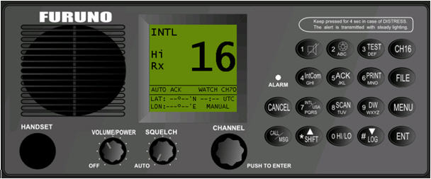

Radioteléfono VHF con DSC incorporado
El usuario puede utilizar este equipo para simular las comunicaciones radiotelefónicas en la banda de VHF, en los canales asignados al Servicio Móvil Marítimo y para la transmisión y recepción de llamadas DSC (Digital Selective Calling). El equipo incluye también un receptor de guardia en el canal 70.
Dependiendo de la configuración elegida del simulador, cada puesto va equipado con un radioteléfono de VHF Furuno (FM-8500 / FM-8800) real o bien con un equipo mimético simulado por software con su misma apariencia y funcionalidad.
